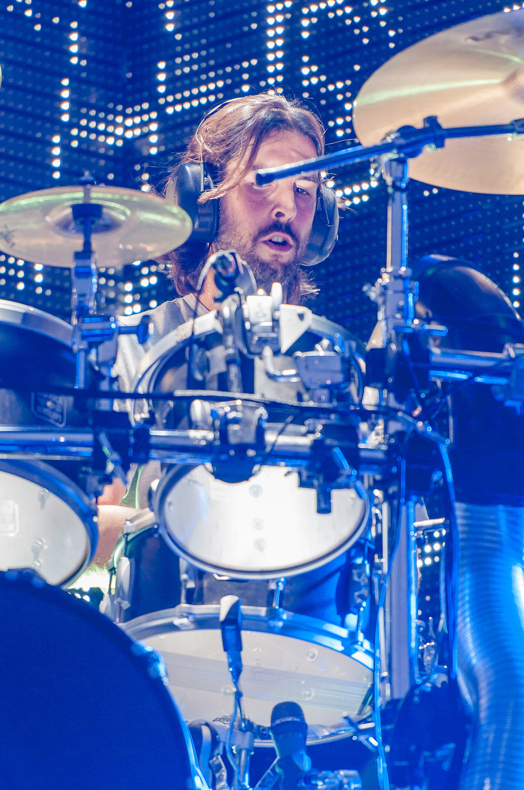

Who cares if one more light goes out?
Discography
Hybrid Theory (2000)
Meteora (2003)
Minutes to Midnight (2007)
A Thousand Suns (2010)
Living Things (2012)
The Hunting Party (2014)
One More Light (2017)
Band members
Current members
Mike Shinoda – vocals, rapping, rhythm guitar, keyboard, samples (1996–2017), synthesizer (2008–2017)
Brad Delson – lead guitar (1996–2017), backing vocals (2006–2017)
Dave Farrell – bass (1996–1999, 2000–2017), backing vocals (2006–2017)
Joe Hahn – turntables, samples, programming (1996–2017), backing vocals (2006–2017)
Rob Bourdon – drums, percussion (1996–2017), occasional backing vocals (2006–2017)
Former members
Mark Wakefield – lead vocals (1996–1998)
Chester Bennington – lead vocals (1999–2017; died 2017), occasional rhythm guitar (2006–2017)
Session and touring musicians
Kyle Christner – bass (1998–1999)
Scott Koziol – bass (2000)
Ian Hornbeck – bass (2000)

Rob Bourdon
Mike Shinoda
Chester Bennington
Dave Farrell
Brad Delson
Joe Hahn
"The hardest part
of ending
is starting again."
-Linkin Park